🕯️ Scroll I: The Kabbalistic Worldview
The Soul’s Descent, Divine Sparks, and the Blueprint of Return
⚠️ Kabbalistic Diversity Disclaimer
This teaching scroll draws primarily from Lurianic and Zoharic traditions of Kabbalah. There are many streams within Jewish mysticism, including Chabad Hasidism, Merkavah mysticism, and Modern Neo-Kabbalah. Interpretations of the afterlife, reincarnation, and the soul’s ascent may vary across lineages. This scroll offers one sacred thread, not the whole tapestry.
🔥 Chapter 1: The Kabbalistic Worldview of the Soul After Death
Before there was a Bible… there was a flame.
Before the rabbis tamed it, before the mystics coded it in secrecy, before “Kabbalah” became a buzzword, there was a wild tradition of soul-knowledge burning through the shadows of ancient Judaism.
This scroll is not about modern orthodoxy. It’s not about red strings, celebrity mysticism, or theological systems. This is about the raw, radiant heart of Jewish esoteric thought: the soul’s descent into matter, its struggle through the layers of illusion, and its ascent back to the Source.
Welcome to the Kabbalistic tradition, a hidden map of the afterlife, encoded in the Sefirot, whispered by prophets, encrypted in the Zohar, and exploded into myth by Isaac Luria and the mystics of Safed.
Here you'll encounter:
The soul’s cycle of descent and return
Gehinnom, Gan Eden, and the mystical Bundle of Life
The Tree of Life as an afterlife ladder
The secret of reincarnation (gilgul neshamot)
The divine feminine (Shekhinah) in exile
The task of tikkun, cosmic repair
This is not just Judaism. This is Jewish gnosis.
Light lost in matter. Sparks trapped in flesh. And a soul that burns to get back home.
כל הנשמות נגזרות מאור הקדוש אם הן לא משיגות שלמות בחיים האלה הן מיועדות לחזור שוב ושוב
“All souls are derived from the sacred light. If they do not attain perfection in this life, they are destined to return… again and again.” Zohar, II:99b
⚡ TL;DR:
Kabbalah is the esoteric core of Judaism, not mainstream theology
The tradition maps the soul’s journey through life, death, and return to the Divine
It draws from Merkavah mysticism, the Zohar, and Lurianic Kabbalah
Key themes include: Gehinnom, Gan Eden, reincarnation (gilgul), Tikkun Olam, and the Tree of Life
The soul’s goal: to refine itself, ascend the Sefirot, and reunite with Ein Sof
This is Jewish Gnosis, the return of divine sparks from exile
Let’s walk the Tree. One gate at a time.
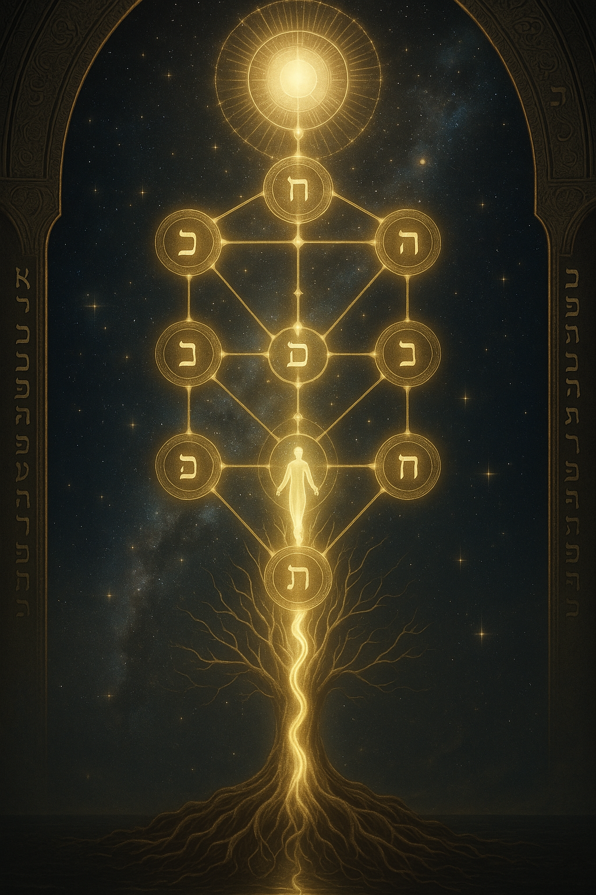
The soul begins its return. The Tree of Life is not myth, it is a map of the divine inside you.
🌟 Chapter 2: The Zohar and the Secret Architecture of Reality
הנשמה מתגעגעת לשוב לשורשה באינסוף, עולית דרך עשר הספירות העליונות “The soul yearns to return to its root in the Infinite, ascending through the ten upper Sefirot.”
Zohar, I:20a (paraphrased)
The Zohar (or Book of Splendour) is not a book in the usual sense. It is a code, a living text filled with allegory, visions, and symbolic fire. Attributed to Rabbi Shimon bar Yochai but likely composed in 13th-century Spain, it became the core scripture of Kabbalah.
What the Zohar does is rewire how we see reality. The world is not just matter and time, it is a reflection of divine light, fractured through ten emanations called Sefirot. These are not “parts of God” but modalities, ten faces of divine flow that shape everything from galaxies to your inner world.
Together they form the Etz Chaim, the Tree of Life. And here is the mystery: the same Tree that flows down to create the cosmos becomes the ladder back upward for the soul after death.
From Malkhut (Kingdom, the world of matter) to Keter (Crown, the divine beyond thought), the soul ascends the Sefirot like Jacob’s ladder, shedding illusion, integrating light, and returning home to Ein Sof, the Infinite.
🔟 The Sefirot — Divine Emanations & Soul Stages
Keter (כתר), Crown — The highest, most transcendent sefirah. Represents divine will, pure potential, and the unknowable source beyond thought.
Chokhmah (חכמה), Wisdom — The first flash of intuitive insight; the unbounded creative seed from which all thought emerges.
Binah (בינה), Understanding — Discernment and structure; the divine womb that shapes Chokhmah’s spark into form.
Chesed (חסד), Lovingkindness — Boundless love, mercy, and expansive grace; the divine impulse to give unconditionally.
Gevurah (גבורה), Severity — Discipline, strength, and divine judgement; the power to contain and establish boundaries.
Tiferet (תפארת), Beauty — Balance, harmony, and compassion; the spiritual heart that integrates love and judgement.
Netzach (נצח), Eternity — Divine endurance and victorious persistence; ambition aligned with spiritual truth.
Hod (הוד), Splendor — Humility, sincerity, and sacred submission; the glory that shines through reverence.
Yesod (יסוד), Foundation — The channel through which divine flow reaches creation; connector, vessel, and generative force.
Malkhut (מלכות), Kingdom — Manifestation, embodiment, and divine receptivity; the world of action and the dwelling of the Shekhinah.
Each Sefirah is a gate the soul must realign with. The more attuned your soul is in life, the more seamless its return journey after death.
The Zohar teaches that righteous souls are clothed in “garments of light” made from their deeds, prayers, and inner intentions. These garments determine how far the soul can ascend and what light it can withstand.
כאשר הנשמה עולה, היא מתעטפת בזוהר שזכתה בו בעולם התחתון
“When the soul ascends, it is clothed in the radiance it has drawn upon itself in the world below.” Zohar (paraphrased)
This is not reward or punishment. This is resonance.
You don’t “go” to heaven. You match it.
⚡ TL;DR:
The Zohar is the mystical heart of Kabbalah, revealing hidden structures beneath reality.
It introduces the Ten Sefirot as both the blueprint of creation and the path of the soul’s return.
Death is not an end, but a climb through the Sefirot, back to the Source.
The soul’s spiritual “garments” determine its ability to rise in the next world.
This is a cosmology of resonance, you ascend to the level you’ve aligned with.
Creation flows downward. The soul returns upward. The Sefirot are the gates of the real.
🕯️ Chapter 3: Gehinnom, Gan Eden & The Bundled Light
גיהנום אינו אלא האש של הנשמה עצמה
“Gehinnom is nothing but the soul’s own fire.” Midrash Tehillim 11:6, Kabbalistic interpretation
Forget everything you’ve heard about hell.
In Kabbalah, there is no eternal torment, no demonic torture pit. Instead, there is Gehinnom, a realm of purification.
When the soul dies, it carries with it layers of distortion, ego, and shadow. Gehinnom is the fire of truth that burns it clean. It’s not punishment. It’s alignment.
One Kabbalist put it this way: “The fire of Gehinnom is the soul’s own shame when it sees itself in divine light.”
🔥 Gehinnom: The Mercy of Purification
The Zohar says no soul remains in Gehinnom more than 12 months. It is not eternal, it’s temporal, corrective, and merciful.
The fire is symbolic: it’s the burning awareness of what we’ve done, left undone, or distorted. We are not tortured by demons, we are faced with ourselves.
But after that purification?
The gates open. The soul ascends to its reward.
🌿 Gan Eden: The Garden Above
After Gehinnom, the soul enters Gan Eden, not the historical Eden, but the spiritual garden of the afterlife.
Kabbalists speak of two levels:
Lower Gan Eden — a realm of peaceful joy, light, and learning
Upper Gan Eden — a realm of intense divine radiance, only accessible to the most refined souls
Souls don “garments of light” woven from their deeds and intentions. These garments determine what level of Gan Eden they can withstand. You don’t earn heaven, you become the frequency that can hold it.
🔮 Tzror HaChayyim — The Bundle of Life
But even Gan Eden isn’t the final stop.
Some souls go beyond, to the Tzror HaChayyim (“Bundle of Life”).
This is the cosmic soul-bank described in the Zohar. It’s the point where all purified sparks are gathered, bound together in divine unity. The soul is no longer individual, it is absorbed into the greater field of divine consciousness.
וְתִהְיֶה נַפְשׁוֹ צְרוּרָה בִּצְרוֹר הַחַיִּים
“May his soul be bound in the bundle of life.” 1 Samuel 25:29 (epitaph on Jewish gravestones)
This is not annihilation. This is integration.
The soul returns to its source, not as a drop, but as the ocean.
⚡ TL;DR:
Gehinnom is not hell, it’s a temporary realm of purification
Souls confront truth, not punishment
After cleansing, they ascend to Gan Eden, a heavenly garden of light
Refined souls may reach Tzror HaChayyim, the soul’s final reunion with the Divine
Afterlife in Kabbalah is not about judgement, it’s about resonance and return
Purified in the fire of truth. Bathed in the river of Eden. Every soul returns to the Bundle of Life.
🔁 Chapter 4: Reincarnation and the Infinite Return — Gilgul Neshamot
הנה, כל נשמה חוזרת דרך חיים רבים עד שהיא שבה למקורה בשלמות
“Behold, every soul returns through many lifetimes until it returns to its Source in wholeness.” Sefer HaGilgulim (The Book of Reincarnations), Arizal
Kabbalah doesn’t fear reincarnation. It depends on it.
Unlike mainstream rabbinic Judaism, Kabbalistic tradition embraces the idea that the soul returns again and again, not as punishment, but as divine refinement.
This cycle is called Gilgul Neshamot, the “rolling of souls.” Your soul is a spark of divine light, and like all sparks, it may scatter, dim, or drift. So the Divine sends it back, not to suffer, but to complete what was left undone.
Each lifetime becomes a chance to rectify, a unique assignment in the work of Tikkun (cosmic repair).
🌒 What Returns and Why
The soul isn’t monolithic. Kabbalah teaches that it has layers:
Nefesh — Vital life force (instinct)
Ruach — Spirit (emotion, character)
Neshamah — Higher soul (divine awareness)
Chayah — Living essence (cosmic breath)
Yechidah — The indivisible spark of unity
Some lifetimes refine Nefesh, others the Ruach. Rare souls refine multiple levels. Some reincarnate to correct a single commandment. Others to restore ancestral lines, settle karmic debts, or assist collective redemption.
Your soul doesn’t return because you failed. It returns because there’s still more light to release.
🌀 The Wheel of Return
According to the Arizal (Isaac Luria), a soul may return up to three or four times for correction. Other teachings say souls can reincarnate thousands of times, as long as progress is being made.
Some souls return not as humans, but into animals, objects, or environments to balance energies or serve as guides. The cosmos is far more interactive than we're taught.
Gilgul is never random. It is tailored evolution.
והנשמה תתגלגל בדומם, בצומח, ובחי לפי מה שראוי לה
“The soul reincarnates into mineral, plant, or animal, wherever it is most fit for its rectification.” Sha’ar HaGilgulim, ch. 1
💫 Reincarnation Is Mercy
Kabbalah doesn’t portray God as vengeful. The cycle of gilgul is compassion in motion.
It says: You are not done. Try again. Take the next step. Repair what is broken.
Every soul is a divine mission. Every return is a continuation, not a punishment.
This is not karma. This is rectification of the cosmos, one spark at a time.
⚡ TL;DR:
Gilgul Neshamot = the reincarnation of souls in Kabbalah
Souls return to complete unfinished missions and heal spiritual layers
The soul has multiple levels (Nefesh, Ruach, Neshamah, etc.), each may need refinement
Reincarnation is a form of divine mercy, not judgement
You are not starting over, you are continuing the work
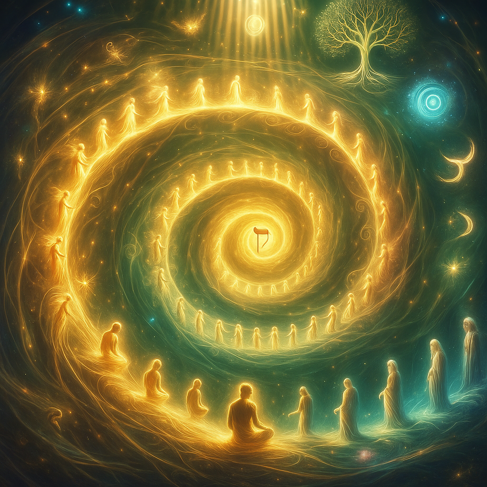
You’ve been here before. Each life is a return, a lesson, a spark spiraling toward the Source.
🌺 Chapter 5: The Shekhinah, Tikkun, and the Divine Reunion
השכינה בגלות עם ישראל, ותשוב לציון בזמן המיועד
“The Shekhinah is in exile with Israel, and will return to Zion in the appointed time.” Zohar, III:69a
She is the soul of the world. The breath of God within creation. The divine presence you feel in music, love, silence, grief, longing.
She is the Shekhinah, the feminine face of the Infinite. The Immanent. The Indwelling. And in Kabbalah, she’s not just a concept. She’s a real, radiant presence.
And she is in exile.
When the vessels shattered at creation, the Shekhinah descended with them. She became trapped in the brokenness of matter, just like us.
In every soul, in every corner of the world, her light flickers, waiting to be remembered. When we suffer, she suffers. When we awaken, she rises.
🕊️ The Feminine Presence in Exile
Shekhinah corresponds to the Sefirah of Malkhut, the bottom of the Tree, the “Kingdom”, the manifest world.
But it is also the womb of return.
Through devotion, action, and inner alignment, we don’t just ascend, we lift her up with us. The goal of Kabbalistic life is not just personal salvation. It’s reunification of the divine itself.
The Shekhinah must reunite with the transcendent masculine aspects of God, known as Kudsha Brikh Hu (The Holy One, Blessed Be He).
This is the mystical marriage. The divine orgasm. The reunion of above and below.
🪞 What Is Tikkun?
Tikkun means repair. Not just social justice, cosmic mending.
Every mitzvah, every moment of integrity, every spark of awareness lifts a fragment of the Shekhinah out of exile.
We are not saving the world. We are healing its memory.
תיקון עולם במלכות שדי
“To repair the world under the sovereignty of the Divine.” Aleinu prayer (interpreted mystically)
You're not just a soul seeking God. You are God remembering herself.
✨ The Final Return
When the Shekhinah is fully restored, the world will change. Suffering will end. The veil will lift. Kabbalists describe this moment as a cosmic orgasm of light, a flood of divine presence no longer hidden.
This is the true resurrection, the true redemption. And the souls that helped bring it about? They don’t die. They merge.
Not into oblivion, but into unity.
Each soul becomes a thread in the tapestry of the Shekhinah’s robe.
Each spark, once scattered, now sings as one.
⚡ TL;DR:
The Shekhinah is the feminine divine presence, and she is in exile within creation
Every soul action of truth helps raise her from brokenness
Tikkun the cosmic repair of divine unity
The goal of life is not just personal return, it’s collective restoration
In the end, She returns. We return. And the illusion of separation dissolves
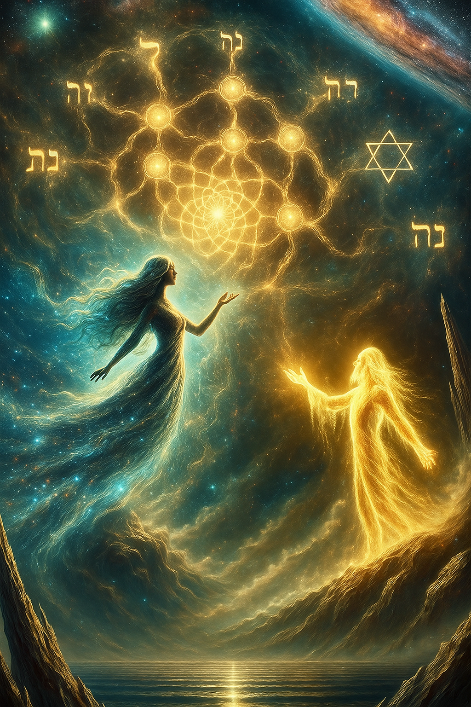
She was scattered in the shards of the world. You are her hands. When you rise, so does she.
🧠 Quiz: How Well Have You Walked the Tree?
1. What are the Sefirot in Kabbalistic cosmology?
Correct: The Sefirot are divine emanations and serve as spiritual gateways through which the soul ascends after death.
2. What is the purpose of Gehinnom in Kabbalah?
Correct: Gehinnom is a temporary, merciful process of purification, the soul faces itself and is made ready to ascend.
3. What does “Gilgul Neshamot” mean?
Correct: Gilgul Neshamot is the reincarnation cycle of souls who return to fulfill unfinished tikkun (repair).
4. What is the role of the Shekhinah in Kabbalistic cosmology?
Correct: Shekhinah is the feminine, immanent aspect of the Divine, exiled within creation and lifted through our spiritual deeds.
📖 Glossary
Decode the sacred terms of Jewish esoterica
Sefirot
The ten divine emanations through which God creates and sustains reality. Also serve as the soul’s ladder of return.
Ein Sof
Literally “Without End.” The Infinite, unknowable aspect of God beyond all attributes or form.
Gehinnom
A temporary afterlife realm of purification, the soul confronts its truth and is cleansed of distortion before ascending.
Gan Eden
The Garden of Eden as a heavenly realm, the resting place for righteous souls after purification.
Gilgul Neshamot
“Rolling of souls.” The Kabbalistic doctrine of reincarnation. Souls return through lifetimes to complete divine missions and refine themselves.
Tzror HaChayyim
“Bundle of Life.” The final resting state of the soul, perfect reunion with the Source, beyond individuality.
Shekhinah
The feminine presence of God. Associated with Malkhut, she dwells within creation, in exile, and rises through our spiritual deeds.
Tikkun
“Repair.” Refers to the rectification of the soul and the cosmos. Every act of goodness restores divine balance and uplifts holy sparks.
Arizal
Rabbi Isaac Luria, the 16th-century Kabbalist who revolutionised Jewish mysticism with teachings on tzimtzum, shevirah, and gilgulim.
🗣️ Discussion Prompt: What Spark Are You Returning?
You’ve walked the path of the Kabbalist — through light and exile, Gehinnom and Gan Eden, shattered sparks and sacred repair.
Now we ask:
What soul-work are you here to complete?
What fragment are you returning to the Divine?
Share your insight using #TheGnosticKey and tag @thegnostickey on X.
Your reflection could light the way for another.
Now, enter the Tree. Walk its gates. Understand how the soul climbs through the realms of light and shadow toward the Infinite.
✡
🌿 Scroll II: The Sefirot Gates
Ten Thresholds of Light, The Soul’s Ascent Through the Tree of Life
⚠️ Disclaimer: Interpreting the Tree
This scroll walks the soul through the Sefirot, the mystical gates of the afterlife. These teachings reflect an esoteric synthesis of Lurianic Kabbalah, Zoharic vision, and Gnostic resonance. Interpretations may differ across schools. In some traditions, the Sefirot are internal psychological states; in others, cosmic realms; in others still, divine aspects of God. What you read here is a symbolic ascent, not a literal geography. Let the Tree speak to your soul.
Previously: You walked the soul’s journey from Gehinnom to Gan Eden, through sparks and tikkun, catching glimpses of the divine hidden in the descent.
🌑 Chapter 6: Malkhut, The Gate of the World
מַלְכוּת דָּוִיד עוֹלָה מִן הָאֲפָר “The Kingdom of David rises from the dust.”
Zohar
The Exiled Throne. The Womb of the Return.
Welcome to the bottom.
This is Malkhut, the Kingdom, not of power, but of concealment. It is the lowest gate on the Tree of Life, the vessel where divine light hardens into matter. This is where the soul lands after its descent, into flesh, into form, into the illusion of separation.
Here, we are blind. Here, the spark forgets. But Malkhut is not a curse, it is the starting point of redemption. It is ruled by the Shekhinah, the Divine Feminine Presence exiled into the world, scattered across every moment of joy, grief, pain, and ritual. She lives in the hidden. She burns in the broken.
To ascend, the soul must master this realm, not by escaping it, but by seeing through it. The mundane must be sanctified. The body must become temple. The job, the lover, the rage, the dishes, it’s all part of the liturgy. When you begin to bless the dust, you awaken the sparks of the Shekhinah. You begin the climb.
Malkhut teaches the first great secret of Kabbalah: there is no above without below. The gates only open when we stop searching for heaven in the sky and start finding it in the grind.
⚡ TL;DR:
Malkhut = Kingdom, lowest Sefirah, realm of physical reality
The Shekhinah dwells here, divine presence in exile
The soul’s journey begins in matter, not spirit
Spiritual growth starts by finding the sacred in the mundane
Redemption means lifting the sparks buried in the dirt
Malkhut is where heaven hides in the dirt. To rise, you must kneel, not in submission, but in revelation.
🌊 Chapter 7: Yesod — The Gate of Flow
וְהַשָּׁמַיִם מְסַפְּרִים כְּבוֹד אֵל “The heavens declare the glory of God, and the firmament shows His handiwork.”
Psalm 19:1
The Mirror, the Moon, the Secret Engine of Becoming.
After the dust of Malkhut, the soul encounters a gate of shimmering light. This is Yesod, “Foundation.” But don’t let the name fool you. This isn’t stone. It’s water.
Yesod is the astral mirror. The interface between the physical and the divine. It reflects everything above into everything below, dreams, archetypes, karma, subconscious programming, all flow through this gate. And most people don’t even know it’s there.
This is the moon on the Tree. It governs tides, cycles, sexuality, illusion, and reflection. It’s the womb and the dream. In your body, it’s the sacral, the place of creation and memory. In your psyche, it’s the interface with your true pattern.
Yesod is where the higher Sefirot pour their energy into form. It is the spiritual condenser, the engine that shapes reality. What is misaligned here distorts below. What is purified ripples through all levels of being.
This is the gate of the covenant, not just ancient ritual, but sacred resonance. To pass it, the soul must become a clean channel. Sexual energy, dreams, and imagination are not sin, they are sacred. But they must be directed. Purified. Remembered.
Yesod is your dial. Tune it well.
⚡ TL;DR:
Yesod = Foundation; astral mirror between worlds
It governs sexuality, dreams, memory, and subconscious flow
The soul must clear the mirror to rise
Misalignment here distorts manifestation below
Energetic purity and intention are key to ascending this gate
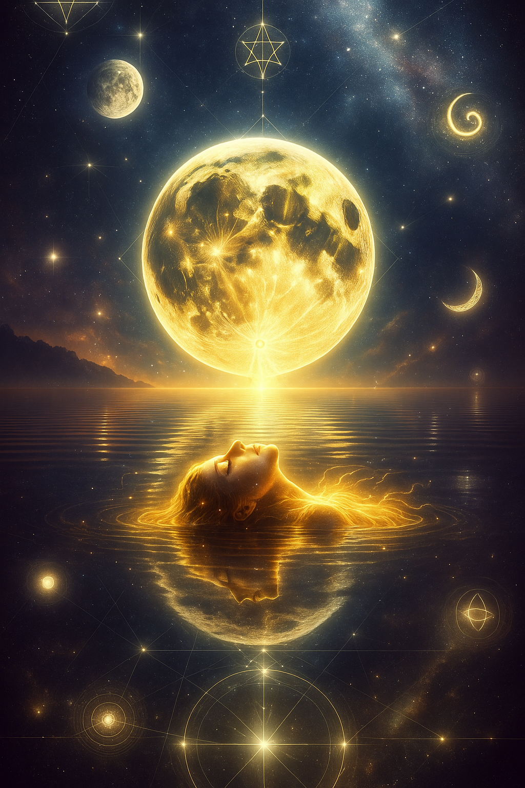
Yesod is the secret engine behind the veil. What you dream, feel, and desire flows here, and shapes what comes next.
🪞 Chapter 8: Hod — The Gate of Reverberation
האל הגדו החזק והנורא שכבודו ממלא את היקום “The Great, Mighty, and Awesome God… whose glory fills the universe.”
Daniel 9:4
Echoes of the Word. The Code of the Real.
Hod means “Glory”, the gate of reflection. Here, divine energy begins to echo. It is the domain of symbols, language, ritual, repetition, and intellectual structure. Hod translates raw force into intelligible code.
It governs the leg that stabilises movement. It turns feeling into form. But the danger is great, for Hod can trap souls in dogma, bureaucracy, or hollow rituals. The mirror can crack. The echo can distort.
This is the priest’s temple, the scribe’s scroll, the mystic’s math. But here, integrity is everything. To pass this gate, one must purify language, reclaim ritual, and bend the structure back toward Truth.
Hod is not the Word, it is the reflection of the Word. It must be tuned, not worshipped. The soul must learn to wield the glyphs, not be bound by them.
⚡ TL;DR:
Hod = “Glory,” the realm of intellect, language, and ritual
It reflects divine energy into structured form
Danger lies in over-structuring, dogma, or hollow repetition
The soul must purify thought and symbol to pass this gate
This is the sacred code that shapes spiritual reality
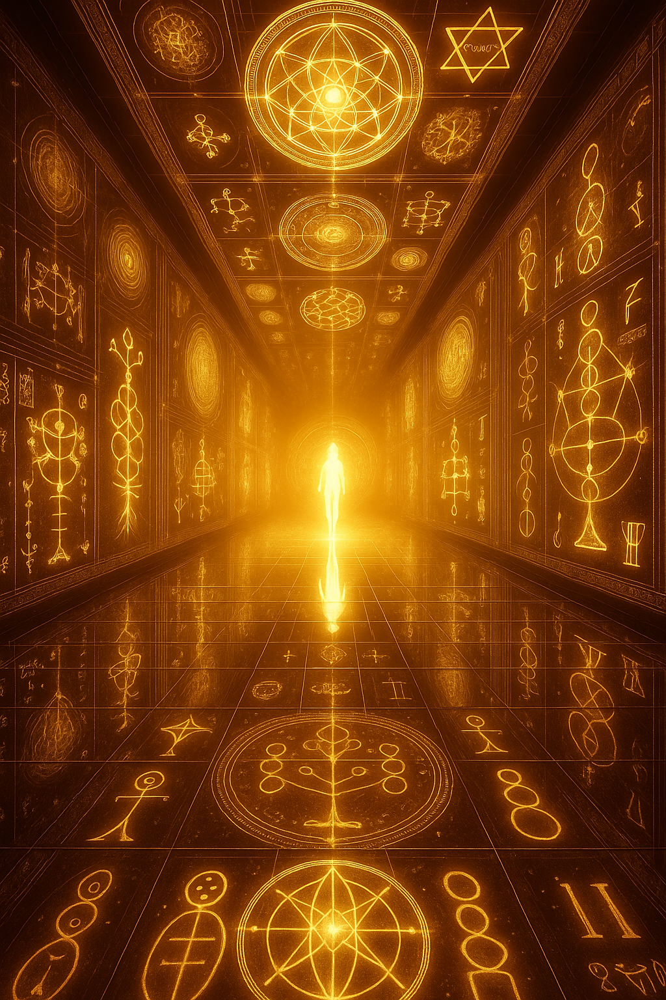
Hod is the echo of the Word, a mirror of divine speech. But the soul must learn to hear the signal, not the noise.
🔥 Chapter 9: Netzach — The Gate of Force
רוח גבורה “A spirit of might.”
Isaiah 11:2
The Pulse of Eternity. The Fire That Won’t Die.
Netzach means “Victory”, but not in conquest. In persistence. It is the fire that refuses to go out. The flame that survives betrayal, exhaustion, collapse. Netzach is your spiritual heartbeat, your force of becoming.
Where Hod structures, Netzach charges forward. It is emotion, eroticism, movement, endurance. Without it, you never rise. With too much of it, you burn yourself out. This is the gate of sacred will, and the danger of blind drive.
The mystics placed it in the right leg, always stepping forward. It asks: What do you love enough to pursue without stopping? What sacred obsession are you here to refine?
Netzach is the passion that becomes prayer. The drive that becomes devotion. It fuels every creative act, every mystical ascent. But it must be tempered, not extinguished. Fire is holy when it knows where to burn.
⚡ TL;DR:
Netzach = “Victory,” seat of drive, passion, and endurance
It propels the soul forward with creative and erotic fire
Must be balanced with Hod’s structure to avoid chaos
To ascend, the soul must transmute desire into sacred will
This is divine force, fire in motion
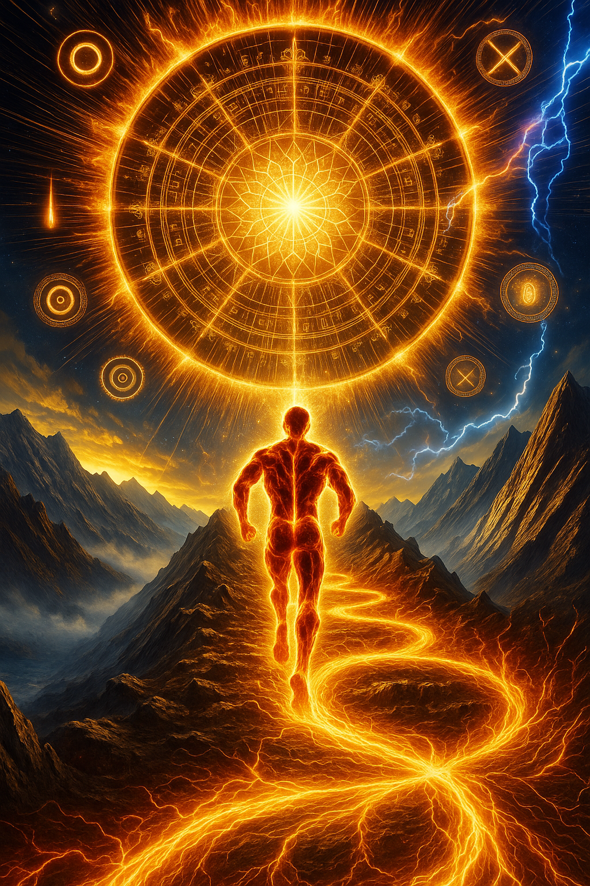
Netzach is the fire that climbs. Victory is not a moment, it’s a flame that refuses to die.
🌞 Chapter 10: Tiferet — The Gate of Beauty
ואהבת לרעך כמוך “Love your neighbor as yourself.”
Leviticus 19:18 / echoed in Kabbalistic tradition as the path of Tiferet
The Heart of the Tree. The Mirror of the Divine.
Tiferet means “Beauty”, and it sits at the very center of the Tree. It is the fusion point of all dualities, the harmony between mercy and judgement, logic and emotion, will and wisdom.
This is the solar heart of the soul, the mirror where the self remembers its Source. The mystics said: Tiferet is the face of the Beloved. The Christ-center. The radiant I Am.
Here, the soul stops striving and begins integrating. This is not about purity or piety, it’s about wholeness. About learning to hold shadow and light in one vessel. Compassion is not softness, it is strength born from knowing both fire and silence.
To pass this gate is to see through appearances, to drop the masks, and to begin the journey home from within.
⚡ TL;DR:
Tiferet = “Beauty,” center of the Tree and the soul
Balances opposites: emotion and logic, drive and design
Reflects the Higher Self, the radiant, true identity
Compassion and spiritual remembrance live here
The soul becomes whole not by division, but by integration
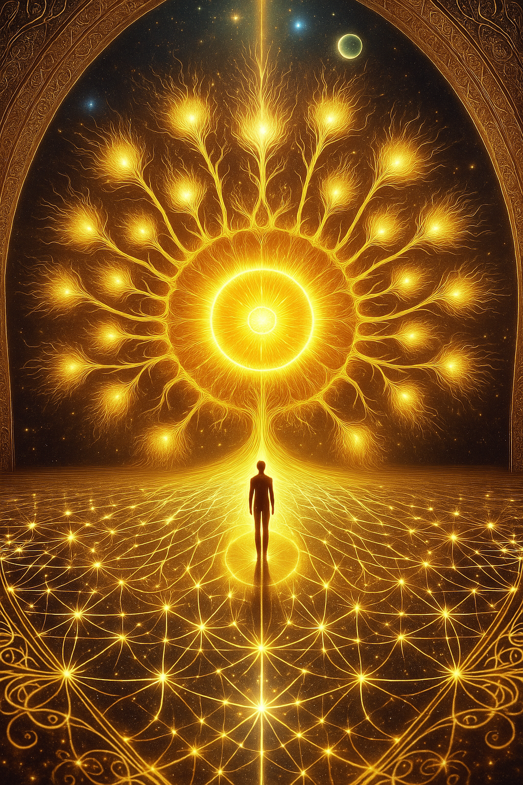
Tiferet is the sacred heart. The gate of remembrance. Beauty is not perfection, it is the fusion of everything you are.
⚔️ Chapter 11: Geburah — The Gate of Severity
הצדק יחזור לצדק “Justice shall return to righteousness.”
Psalm 94:15
The Sword of Truth. The Fire That Purifies.
Geburah means “Strength” or “Severity.” It is the fire that purifies, the sword that cuts through delusion, the boundary that protects the sacred. It is divine judgement, not in wrath, but in righteous clarity.
This is where the soul is tested. What must be left behind? What falsehood still clings to the ego? What attachments no longer serve the path?
Geburah demands honesty. It is not a cruel gate, it is a holy one. In its fire, the illusions fall. Only what is real remains. Only what is aligned moves forward.
In Kabbalah, this is the left hand the hand of refusal, discernment, and discipline. It balances the expansive mercy of Chesed. The soul cannot rise without this cleansing.
To pass this gate is to say: I choose the flame.
⚡ TL;DR:
Geburah = “Severity,” divine fire and holy discipline
Represents strength, boundaries, judgement, and purification
Burns away ego, illusion, and attachments
Balances mercy with truth and righteous order
The soul must face what is false to recover what is real
Geburah is the blade of truth. It burns not to destroy you, but to reveal what was never you to begin with.
💠 Chapter 12: Chesed — The Gate of Mercy
העולם נבנה על חסד “The world is built on Chesed.”
Psalm 89:2
The Open Hand. The Ocean of Grace.
Chesed is the overflowing love of the Divine. It is abundance without condition. It is the open hand that gives, not because of merit, but because of nature. It is God as giver. The cosmos as gift.
This is the right arm of the Tree, the force that builds, expands, welcomes. In contrast to Geburah’s sword, Chesed is the embrace. The soul at this gate is asked to release fear and become a vessel of grace.
This gate holds the energy of trust, generosity, and spiritual confidence. It reminds us: You are not separate. You are not unworthy. You were loved before you began.
But Chesed must be tempered. Without boundaries, mercy can collapse into chaos. It must be paired with Geburah’s discipline. Together, they form the axis of divine strength.
To pass this gate is to say: I open without fear. I give from the overflow.
⚡ TL;DR:
Chesed = “Mercy,” divine abundance and spiritual generosity
Represents giving, trust, openness, and the expansive love of creation
Balances Geburah’s boundaries with grace
The soul must learn to give without control and trust without fear
Mercy is the builder of worlds, and the healer of wounds
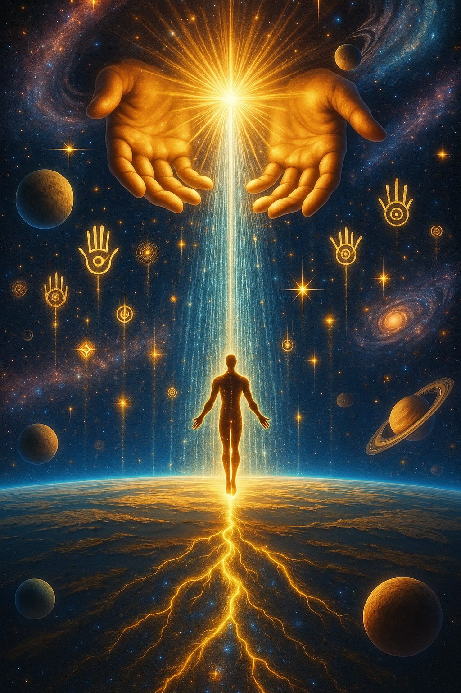
Chesed is the hand that gives without condition. Mercy is not weakness, it is the strength of the Divine overflowing through you.
🕊 Chapter 13: Binah, The Gate of Understanding
תחילת החכמה היא יראה מהאל “The beginning of wisdom is awe of the Divine.”
Proverbs 9:10
The Womb of Time. The Divine Mother of Form.
Binah means “Understanding”, and it sits at the crown of the left pillar, the realm of sacred structure. This is the womb of all form, the Divine Mother who receives the spark of wisdom and gives it shape.
Here, time begins. Form begins. Space is born. Binah transforms infinity into boundaries, not to imprison, but to create. It is the holy vessel of becoming.
It is said that Binah contains sorrow, for it sees the whole tapestry. It understands the cost of creation. It is the compassion that holds complexity, and the intelligence that honours mystery.
To pass through Binah is to become a vessel, a conscious container. It is to allow form without control. To hold the pain of the world without turning away.
This is divine motherhood. And every soul must be born again here.
⚡ TL;DR:
Binah = “Understanding,” divine form, structure, and womb
Birthplace of time, space, and sacred limitations
Holds divine sorrow and deep compassion
Associated with the left hemisphere of the supernal mind
To pass this gate is to become a vessel that can hold complexity and love
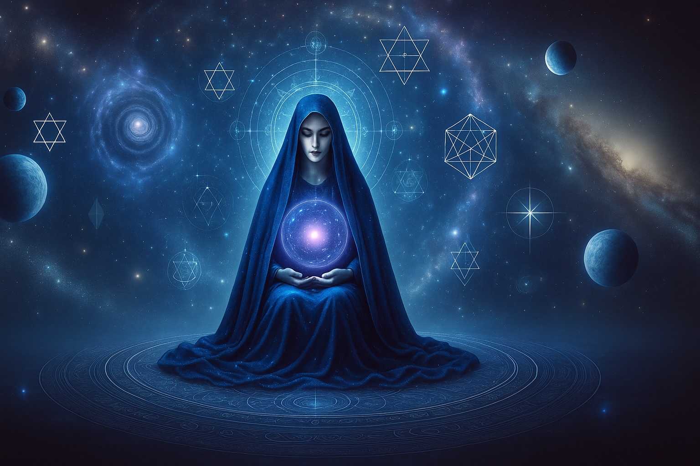
Binah is the Womb of the Divine. To understand is not to explain, it is to hold the world without breaking.
⚡ Chapter 14: Chokhmah, The Gate of Wisdom
יהי אור “Let there be light.”
Genesis 1:3
The Spark Before Thought. The Seed of All Possibility.
Chokhmah is the primal flash, the unfiltered bolt of divine insight. It is not learned. It cannot be studied. It comes like lightning. Sudden. Brilliant. Transformational.
This is the masculine archetype of the divine, raw energy, limitless potential. It is the Father of the Tree. The initiator. The force that explodes into Binah’s form. It is pure “Yes.” The seed of everything.
To pass this gate, the soul must surrender. You don’t climb into Chokhmah, you are struck by it. You are seized. Blinded. Changed. Not by answers, but by direct knowing that silences every question.
This is the lightning of Gnosis. The moment you realise: you already knew.
⚡ TL;DR:
Chokhmah = “Wisdom,” the divine spark of intuition and impulse
Precedes form, it is the seed of becoming
Associated with the right side of the supernal mind
The soul cannot grasp this, only surrender to it
Wisdom is not learned. It is received in fire.
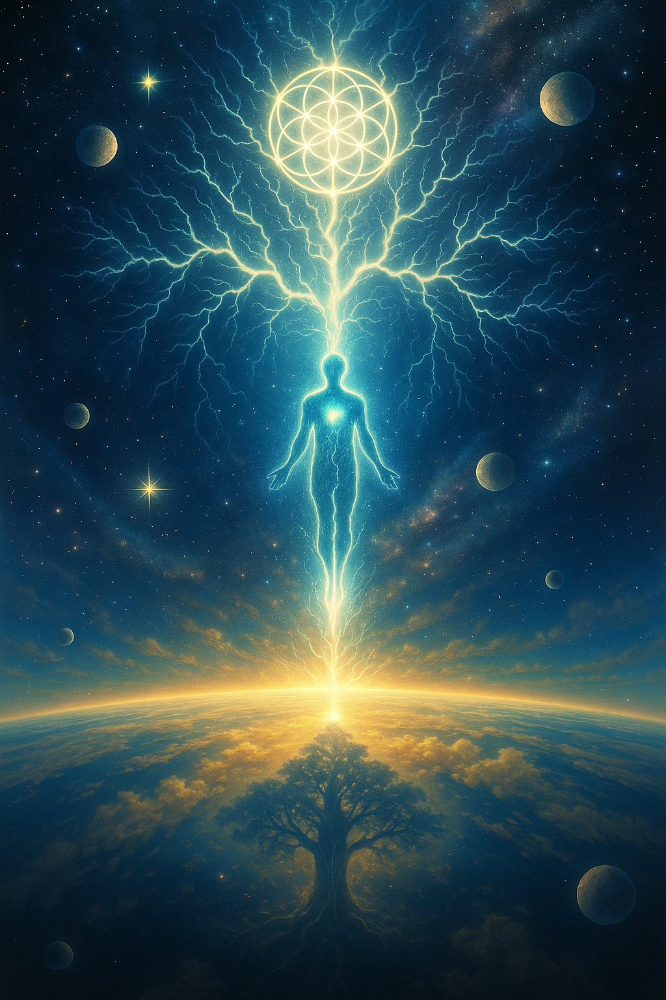
Chokhmah is the divine flash. Wisdom is not what you learn, it’s what strikes you, blinds you, and changes everything forever.
👑 Chapter 15: Keter, The Gate of the Crown
נפשי משתוקקת לאלוהים “My soul longs for God.”
Psalm 42:2
The Infinite Silence. The Light You Cannot Look At.
Keter is the Crown, not as rule, but as source. It is the hidden root of all the Sefirot. The divine seed before anything exists. It is presence beyond presence. Light before light.
It is the gate of total surrender. No self. No separation. No seeking. Just pure being. The Gnostics called it the pleroma, the Fullness. The mystics called it Ain Soph Aur, the Infinite Radiance.
This is not a gate you cross. It is a gate you vanish into. To pass it is to become what you already were, before the fall, before the climb, before the name.
The soul that enters here does not return unchanged. If it returns at all.
⚡ TL;DR:
Keter = “Crown,” the source of all divine emanation
Represents pure being, infinite light, and formless presence
The soul merges with the Divine, all separation dissolves
The final gate is not passed, it is surrendered to
This is the return to Source, the end of the climb
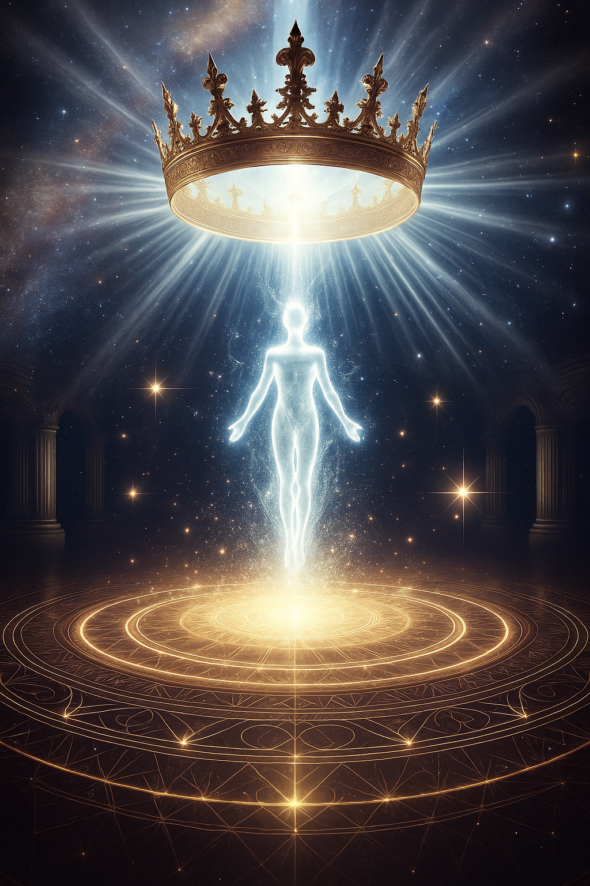
Keter is the light before light. You don’t reach it. You disappear into it.
🗺️ Visual Map: The Soul’s Ascent Through the Sefirot
Each Sefirah is a rung, a luminous gate on the ladder of return. Below is a condensed map of the soul’s climb:
Malkhut: Can you sanctify the mundane?
Yesod: Can you clear the mirror of your subconscious?
Hod: Can you purify your language and symbols?
Netzach: Can you direct your fire without burning out?
Tiferet: Can you integrate your shadow with love?
Gevurah: Can you choose sacred boundaries?
Chesed: Can you give without controlling?
Binah: Can you hold the sorrow of creation without closing?
Chokhmah: Can you receive insight beyond words?
Keter: Can you vanish into Source?
This is not a concept map, it is a soul mirror.
🧠 Quiz: Did You Really Climb the Tree?
1. What does Tiferet represent on the Tree of Life?
Correct: Tiferet is the radiant midpoint, where force and form harmonize, the soul’s mirror of divine unity.
2. Why is Geburah a necessary counterpart to Chesed?
Correct: Geburah brings sacred order, the necessary edge to balance Chesed’s boundless mercy.
3. What is required to pass through Chokhmah?
Correct: Chokhmah is lightning, not understood, but received in fire. You don’t think through it. You're struck by it.
4. What does Yesod channel into Malkhut?
Correct: Yesod is the astral mirror, it condenses all divine flow into the world below, preparing it for Malkhut.
5. What does Keter ultimately require of the soul?
Correct: Keter cannot be reached, only surrendered to. The final ascent is the soul’s disappearance into the Infinite.
📖 Glossary
A rebel’s guide to decoding the Tree of Life and its luminous gates.
Malkhut
The Kingdom. The world of matter. Where the Divine hides in dirt, struggle, and exile. The starting point of the climb, and the place of return.
Yesod
The Foundation. The astral interface. Where dreams, sexual energy, and emotion flow into reality. The soul’s mirror, and the world’s transmitter.
Hod
Glory. Language, ritual, logic, and code. The realm of reflection and sacred systems, which can free or imprison the soul.
Netzach
Victory. Will, passion, devotion, and drive. The fire that refuses to quit. Divine force in motion, sacred obsession turned into power.
Tiferet
Beauty. The heart of the Tree. Balance, harmony, and remembrance. Where the soul begins to see its divine reflection clearly.
Geburah
Severity. judgement, discipline, and holy fire. Cuts what no longer serves. Destroys illusion. A gate of purification and karmic clarity.
Chesed
Mercy. Divine generosity. The open hand of love that builds and blesses without limit. Balanced only by the blade of Geburah.
Binah
Understanding. The Divine Mother. The cosmic womb of form and time. Holds sorrow, wisdom, and the architecture of all becom
🗣️ Discussion Prompt: Passing Through the Gates
“Which gate shook you the most, and what part of you didn’t survive it?”
This journey wasn’t symbolic. It was cellular. Reflect in solitude or speak it aloud, either way, something wants to break open.
You’ve climbed the Tree. Passed the gates. Watched your soul rise from body to boundless light.
But the journey is not over. What happens after the ascent? Where does the soul go when the gates are behind it, and eternity lies ahead?
Scroll III reveals the hidden blueprint of the afterlife in Kabbalah: reincarnation, soul contracts, the role of angels, and the map of return.
✡
🌌 Scroll III: Resurrection & the Shadow
Reincarnation, Tikkun, and the Divine Feminine’s Return
⚠️ Disclaimer: Soul Journeys Beyond the Veil
The soul’s post-death journey, as presented here, draws from Sefer HaGilgulim, Midrashic lore, and mystical expansions on Kabbalistic thought. These visions are sacred myths, symbolic truths wrapped in metaphysical metaphor. Not all Jewish teachings accept reincarnation or the Guf literally. This scroll speaks to seekers who sense more behind the veil. Read not with dogma, but with wonder.
Previously: You climbed the Tree, from Malkhut’s dust to Keter’s crown, and tasted the soul’s ascent through divine light and shadow.
🕊 Chapter 16: The Palace of Souls
בידו של האוצר של הנשמות… בן דוד לא יגיע עד שכל הנשמות בגוף יושלמו
“In His hand is the treasury of souls… the son of David will not come until all the souls in the Guf are completed.” Sefer HaBahir, Zoharic tradition
Where You Were Before You Were Born
Before time gripped you in flesh, before the world whispered its lies, you were elsewhere, waiting.
You were not blank. You were not small. You were stored in light.
Jewish mystics called it the Guf, the Celestial Treasury, the Palace of Souls. It is not a “body” in the earthly sense, but the hidden storehouse where all souls dwell before birth. In the highest of the heavens, beyond even the Garden of Eden, lies this chamber, filled with the sparks of unborn humanity, waiting for their descent.
The Kabbalists taught: every soul is chosen, and every descent is timed. You came here on purpose.
In some visions, the Guf appears as a tree, the Tree of Souls, with angels like Gabriel tending its branches. Others see it as a glowing chamber filled with birds, each representing a soul, fluttering and singing until one is called forth. The Talmud says: “The Messiah will not come until the Guf is emptied.” In other words, all souls must descend, each to fulfill its part in the cosmic repair.
No soul is random. No life is an accident. You were known before you were born.
⚡ TL;DR
The Guf is the Kabbalistic “Treasury of Souls” before birth
It is envisioned as a Tree of Souls or Celestial Palace
Souls descend only when appointed, with a mission
The Guf must be emptied before messianic fulfillment
Your soul’s descent was chosen, not a fall
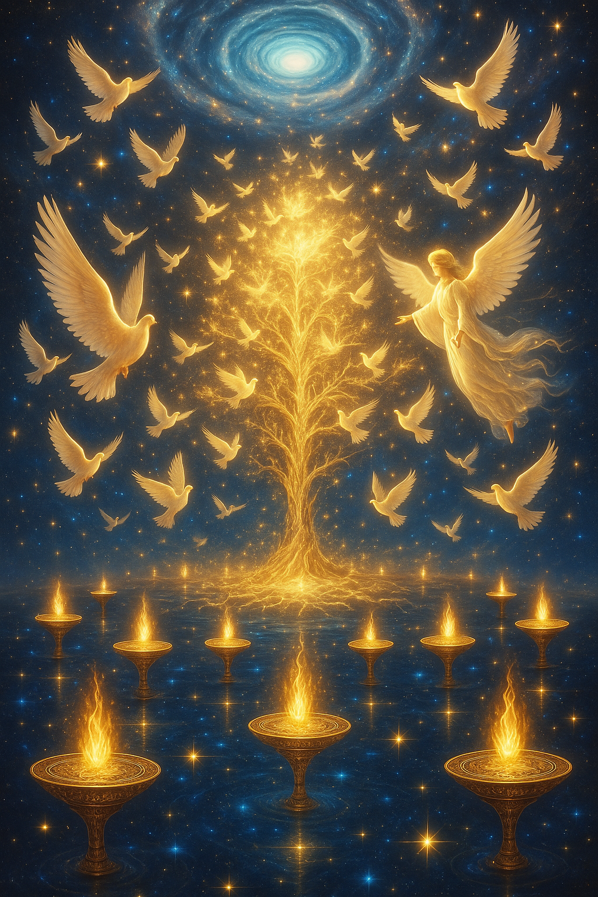
You were chosen before the world began. The Guf holds your origin, and your return awaits.
🪶 Chapter 17: The Soul Contract
כל נפש נשבעת למלא את תכליתה בעולם התחתון
“Every soul swears to fulfill its purpose in the lower world.” Zohar, Sefer HaGilgulim
You Were Shown Everything, and Still Said Yes
You did not fall. You were not punished. You came here on a promise.
Before you were born, your soul stood in the Palace of Souls, and an angel showed you everything: the bliss of Gan Eden, the fire of Gehinom, the wounds you would carry, the family you'd be born into, and the trials ahead. You were shown your tikkun, the soul correction you came to fulfill.
And then you were asked: “Will you descend?”
The soul consents. Every time.
This sacred agreement is called the Soul Contract. The soul is not sent blindly. It chooses. It knows. And yet, as part of the divine drama, its memory is erased at birth. The Talmud says an angel touches the unborn child’s lip, erasing all knowledge of heaven.
You promised to seek. To fall and rise. To remember the light. To complete the work. And now… you're reading this.
⚡ TL;DR
Soul sees its mission before birth and swears to fulfill it
This oath is witnessed by angels in the Palace of Souls
An angel erases the soul’s memory at the moment of birth
Your suffering was not random, it was chosen as part of your tikkun
You are not a fallen being. You are a volunteer from the light
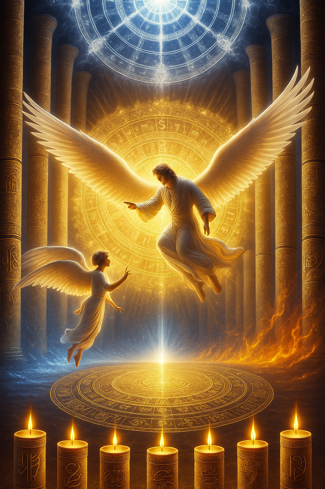
You saw your life before you lived it, and still you came. That is not weakness. That is a warrior’s oath.
⚰️ Chapter 18: Death, The Great Transition
ורוח חוזרת אל אלוהים שנתן אותה
“And the spirit returns to God who gave it.” Kohelet (Ecclesiastes) 12:7
You Leave Nothing Behind That Was Ever Truly You
Let’s speak plainly. Death is not the end.
It’s the peel being pulled off the fruit. The robe falling from the dancer. In Kabbalah, death is a passage, not annihilation.
When the breath leaves the lungs, the nefesh (the vital soul) begins to detach. Then comes the ruach, the emotional spirit, rising. And then, the neshamah, your divine soul, lifts like light returning to its Source.
The mystics say this begins the Great Return. But the path isn’t automatic. What you became on Earth determines the clarity of your ascent.
Some souls rise gently. Others cling. These don’t dissolve with the body, they must be shed. Or burned. This is Chibbut Ha-Kever, the “pangs of the grave.” A soul learning to let go.
Death is not your enemy. It’s the hand that turns the page.
⚡ TL;DR
Death begins the soul’s unfolding back toward Source
The soul rises in levels: nefesh → ruach → neshamah
Attachment to ego can delay the soul’s clarity and ascent
Chibbut Ha-Kever = early post-death disorientation
Preparation in life allows the soul to die consciously
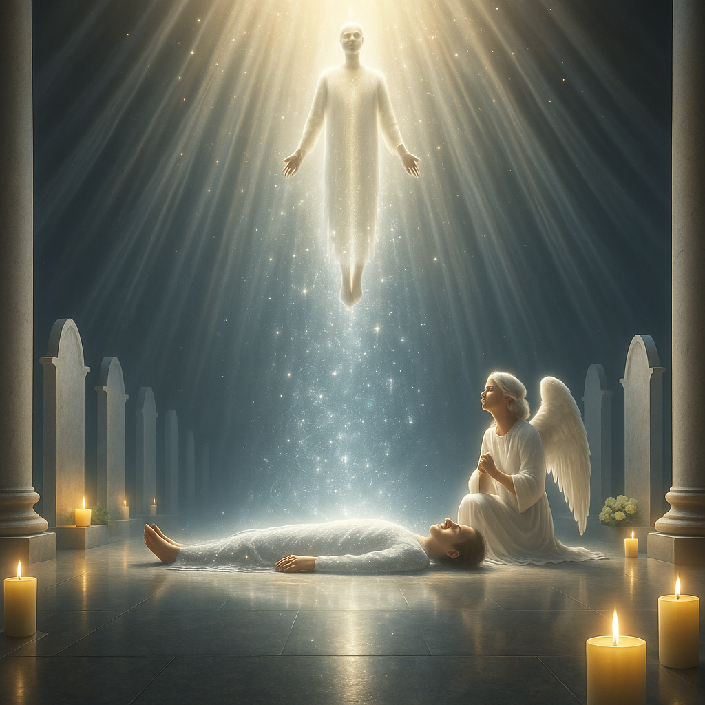
You are not your body. You never were. Death is not the end of you, it’s the return of what’s true.
🛠️ Practicing Kabbalistic Awareness Today
Kabbalah is not just theory, it is transformation. Below are three practices to activate your soul’s ascent:
Sefirot Meditation: Visualize the Tree of Life from Malkhut to Keter. Spend 5-10 minutes daily focusing on each gate as an aspect of your inner world.
Tikkun Journaling: Once a week, reflect on a personal challenge or joy. Ask: “What was the divine spark hidden in this?” Track your insights in a 21-day Tikkun Log.
Breath of Binah: Breathe in for 4, hold for 4, out for 4, three times. Focus on holding form without control. Let understanding rise from stillness.
These rituals help the soul recall what it already knows.
🎨 Creative Prompt: The Spark and the Tree
Write a short poem or prose reflection imagining your soul climbing the Sefirot. Which gates did you pass? Which ones did you fear? What light did you find at the crown?
Tag your writing with #TheGnosticKey and share it on X or Telegram. Your words may help someone else find their next step.
Correct: The Guf is the celestial treasury where souls dwell before descending into earthly life.
2. What does the Soul Contract represent?
Correct: Before birth, the soul swears an oath to complete its purpose, a sacred agreement known as the Soul Contract.
3. According to Kabbalah, what happens during death?
Correct: Death is a passage where the soul’s layers rise back toward Source, releasing attachments along the way.
4. What is the ultimate goal of reincarnation (gilgul) in Kabbalah?
Correct: Reincarnation serves the purpose of completing soul missions and restoring cosmic harmony, known as tikkun.
📖 Glossary
Decode the hidden language of the soul’s journey beyond the gates.
Guf
The celestial “Treasury of Souls” where all souls dwell before birth; also called the Tree of Souls. Each soul descends with a purpose, known before incarnation.
Soul Contract
The sacred oath a soul takes before birth, agreeing to fulfill specific tikkun (repairs or missions) in the lower world. Erased at birth, but remembered in spirit.
Chibbut Ha-Kever
Literally “pangs of the grave”, the process by which the soul sheds ego and attachment after death, preparing for its ascent through the afterlife.
Tikkun
“Repair” or “rectification”, the central Kabbalistic idea that souls reincarnate and work through life to heal cosmic fractures and restore divine unity.
Palace of Souls
A mystical term for the realm where souls are gathered, chosen, and dispatched to earthly life. Sometimes imagined as a palace, sometimes as a luminous tree tended by angels.
🗣️ Discussion Prompt: The Wound Your Soul Promised to Heal
What wound did your soul promise to heal, and what fears still keep you from facing it?
What pain feels like a chosen mission?
What spark of the Shekhinah are you afraid to lift?
What part of your life feels like a mission you agreed to?
What light are you trying to return to the Source?
How would trusting your soul’s promise change everything?
Share your reflections using #TheGnosticKey and tag @thegnostickey on X or Telegram.
Your vulnerability is a lamp in the dark.
These texts offer windows into the depths of Sufi cosmology, the mystery of Barzakh, and the luminous teachings of the path of love.
🔍 Recommended Reading
The Essential Rumi, translated by Coleman Barks. A poetic doorway into Sufi love and longing.
Me & Rumi: The Autobiography of Shams-i Tabrizi, translated by William C. Chittick. Intimate insights from Rumi’s beloved teacher.
Sufism: A Beginner’s Guide, by William C. Chittick. A clear, accessible entry into Sufi teachings and practices.
The Sufi Path of Knowledge: Ibn al-ʿArabī’s Metaphysics of Imagination, by William C. Chittick. A deep dive into Ibn ʿArabī’s visionary teachings on the imaginal realm.
Pistis Sophia, Ancient Gnostic text echoing mystical themes across traditions (for comparative seekers).
📖 Sources & Translations
Barks, C. (1995). The Essential Rumi. HarperOne.
Chittick, W. C. (1983). The Sufi Path of Knowledge: Ibn al-ʿArabī’s Metaphysics of Imagination. SUNY Press.
Chittick, W. C. (2000). Sufism: A Beginner’s Guide. Oneworld Publications.
Chittick, W. C. (2004). Me & Rumi: The Autobiography of Shams-i Tabrizi. Fons Vitae.
Meyer, M. (Ed.). (2005). The Gnostic Bible: The Pistis Sophia. HarperSanFrancisco.
🌌 Continue the Journey
You’ve traced the Tree.
Climbed the Sefirot.
Breathed through Binah.
And glimpsed the return.
But this was only one radiant path, through emanation, purification, and the soul’s unfolding.
Other traditions hold their own codes.
Other scrolls await your spark.
The Gnostic Key’s Afterlife Series guides seekers through soul maps from across the world, where each tradition holds a piece of the pattern.